← Release dossier · Reference match
Microduck reverse-engineering · lane A · head conformance
Is the simulation head the product head? Measured from the photographs.
GOAL.md finding 1 said the simulation head is "far longer front-to-back than the compact domed head in every product photo" and its eye bezel is missing; the handover correction demoted that to CANNOT DETERMINE. Leif: "im not sure that the simulation meshes are the same as their product meshes! you have to use the images as references". This document settles it by measurement: every product photograph is scaled by the XL330-M288-T servo visible in the same frame, our model is posed to the photograph with a perspective camera, and the head shell is compared in millimetres against the mesh's 91.760 × 122.690 × 46.336 mm under the rebuild rule (1.5 mm per axis), never loosened.
out/head/head.jsongenerator: tools/gen_head.py1Verdict
noenoeil.stl is a Ø30.000 mm ring,
7.5 mm long, standing proud of the face panel (whose only opening is the Ø14.5 mm lens hole) — exactly the accent-colour ring in the
photographs (PASS exists). Its diameter at the head's own length scale (ring over head extent, photograph
against render, scale-free) reads +0.49 ± 0.45 mm in the store photographs whose ring is seen whole (Table 5) PASS;
the front view's ring/width pair is CANNOT DETERMINE and its attribution to the ring CANNOT DETERMINE.
Face layout in the front view (Table 6, each graded): eye centre below the shell top +2.34 mm CANNOT DETERMINE, eye centre off the mid-line -0.16 mm PASS, ToF window from the MJCF site +1.25 mm CANNOT DETERMINE.
head: 2 photographs admitted (cream-profile-left, graphite-profile-right), each scaled by the XL330-M288-T case in the same frame (20.000 mm), posed and fitted with a perspective camera, size ratio product/mesh = k * W_render / W_photo; combined length deviation -0.348 ± 4.738 mm; per-axis +0.056 ± 4.783 / +0.620 ± 2.469. Front view: ring OD / beak width, photo 0.3521 vs mesh 0.3226 (FAIL). Eye bezel: profile ring diameter at the head's length scale +0.49 ± 0.45 mm vs the noenoeil mesh 30.000 mm.
2The question and the rule
COMPARISON.html §5.1 could only compare scale-free silhouette ratios, and the one photograph it used has the beak open and the head pitched and yawed — so its +69 % aspect-ratio difference was confounded and it stopped at CANNOT DETERMINE, naming photogrammetric scaling against the servo as the evidence that would settle it. That is what this document does. The grading rule is the one every rebuilt part on this shelf is held to — docs/REBUILD-PROTOCOL.md §3: PASS = p95 <= 1.0 mm both ways AND bbox within 1.5 mm per axis AND 0 unmatched reference features — applied to the product as the reference and Pollen's mesh as the candidate. Because a photograph yields a deviation d with an uncertainty u, the verdict is decided the only honest way: PASS when |d| + u ≤ 1.5 mm, FAIL when |d| − u > 1.5 mm, otherwise CANNOT DETERMINE. Nothing is loosened; a measurement that cannot discriminate at 1.5 mm says so.
| Item | Value | Source |
|---|---|---|
top_head_shell | 91.760 × 122.690 × 46.336 | out/verify/mech_dims.json (length = 122.690 along the mesh's second axis) |
bottom_head_shell | 91.763 × 116.748 × 20.136 | out/verify/mech_dims.json |
jaw | 91.416 × 68.710 × 29.448 | out/verify/mech_dims.json |
noenoeil (eye ring) | Ø30.000 × 7.5 boss, Ø14.4 bore | reference/pollen-microduck-rl/assets/noenoeil.stl via cecad.meshfeatures.cylinders(scale=1000): boss d_mm 30.0 length 7.5 axis y; hole d 14.4 length 6.0. face_part.stl: hole d 14.5 length 1.3 at the same axis, no 30 mm opening — the ring stands proud of the face panel (noenoeil y -63.5..-54.0, face_part front at y -55.5). |
| XL330-M288-T case width | 20.000 mm | ROBOTIS e-manual, XL330-M288-T, Specifications table: 'Dimensions (W x H x D) 20.0 x 34.0 x 26.0 [mm]', https://emanual.robotis.com/docs/en/dxl/x/xl330-m288/ (fetched 2026-09-02; the same table at https://docs.robotis.com/docs/dxl/model_reference/x_series/xl_series/xl330-m288/, which links XL330.pdf/.dwg/.stp). Face seen: the 20.000 x 34.0 horn/label face — the servo mesh in Pollen's MJCF is 20.000 (mesh x) x 34.06 (mesh z) x 29.04 (mesh y = 26.0 case + 3.04 horn) and in the neck body mesh x = world -x, mesh z = world -z (tools/head_probe.py). |
3Scale — millimetres per pixel from the servo in the same frame
The XL330-M288-T is the only object of independently known size in every store photograph. Its case width is read as the mode of the dark-run widths over many scan lines across the case (label text and cables break single lines; the case gives the same width on every clean line). The width the same 20.000 mm face has in our render at the fitted camera is Wrender = 20.000 mm × f / z — the exact pinhole the frame was drawn with (f from its field of view, z the servo geom's mean vertex depth in the fitted camera, MuJoCo's stereo pair averaged as its mono render does). The model's servo therefore fixes the depth; the face the photograph shows is identified on the photograph (the label text sits on the 20 × 34 face — Table 2's evidence column) and, for the ankle, checked against the neck-servo scale of the same shoot. The size ratio product/mesh = k · Wrender / Wphoto carries the servo-to-head depth difference through the camera model rather than assuming it away. The projection is cross-checked for every servo: in a second ±250 mm / 1600 px frame at the same camera the servo geom's segmentation mask is read across its own axis with the same mode-of-runs estimator and compared with its projected width (Table 2; the first release of this page skipped that read for the ankle and still printed PASS — a defect found by review and fixed 2026-09-03). Uncertainty per servo: ±1 px per edge plus the accepted lines' spread, the fit's spread of k, and the camera-distance term of §6b.
| Photograph | Feature | Width in photo (px) | mm / px | Wrender (px): 20.000 mm at the servo's depth | Model servo silhouette (mm) | Cross-check: mask vs projected width, ±250 mm frame | Size ratio product/mesh |
|---|---|---|---|---|---|---|---|
| Cream, standing, left profile (store) | upper neck servo (head_pitch), horn/label face | 131.30 30 of 129 lines | +0.15232 ± 0.00172 | 68.28 | 20.26 | PASS 65.0 / 65.7 px: -1.07 %, 39 % of the box visible | +1.0440 ± 0.0122 |
| face evidence: the 20 x 34 label face: 'DYNAMIXEL XL330-M288-T' printed across it (visible in the pair picture), the neck pitch axes are lateral so the horn faces a profile camera; the model's neck servo geom shows the same 20 mm face (render_silhouette_mm) | |||||||
| Cream, standing, left profile (store) | lower neck servo (neck_pitch), horn/label face | 131.46 46 of 63 lines | +0.15214 ± 0.00174 | 68.18 | 20.26 | PASS 65.0 / 65.6 px: -0.95 %, 42 % of the box visible | +1.0412 ± 0.0123 |
| face evidence: as the upper servo: label text across the scanned face, lateral pitch axis | |||||||
| Sky, standing, three-quarter front-left (store) | upper neck servo (head_pitch), label face + side face | 151.22 32 of 83 lines | +0.13226 ± 0.00146 | 68.46 | 27.95 | PASS 91.0 / 90.9 px: +0.11 %, 46 % of the box visible | +0.8721 ± 0.0103 |
| face evidence: CANNOT DETERMINE: no face evidence recorded for this scan · model servo: the model's servo geom presents a 27.95 mm silhouette across its axis at this camera — a 20 x 26 case turned 20.9 deg about its long axis (leg pose + hip yaw in the model's keyframe), not the square-on 20.000 mm label face the photograph shows; the geom fixes the depth only, the face width comes from the photograph's face_evidence | |||||||
| Sky, standing, three-quarter front-left (store) | lower neck servo (neck_pitch), label face + side face | 165.45 11 of 57 lines | +0.12088 ± 0.00126 | 68.12 | 27.99 | FAIL 79.1 / 90.6 px: -12.60 %, 55 % of the box visible | +0.7931 ± 0.0089 |
| face evidence: CANNOT DETERMINE: no face evidence recorded for this scan · model servo: the model's servo geom presents a 27.99 mm silhouette across its axis at this camera — a 20 x 26 case turned 21.0 deg about its long axis (leg pose + hip yaw in the model's keyframe), not the square-on 20.000 mm label face the photograph shows; the geom fixes the depth only, the face width comes from the photograph's face_evidence | |||||||
| Graphite, standing, right profile (store) | near (right) ankle servo, label face; tilted with the shin | 136.81 42 of 65 lines | +0.14619 ± 0.00178 | 71.90 | 22.27 | PASS 73.3 / 76.1 px: -3.60 %, 37 % of the box visible | +0.9644 ± 0.0123 |
| face evidence: the 20 x 34 label face: 'DYNAMIXEL XL330-M288-T' is printed across the scanned face (read at 4x zoom, rows 1700-2100 x 780-1180 of the photograph); the ankle joint's bearing at (1030, 1850) is seen face-on, so the joint axis — the servo's horn axis — points at the camera and the horn/label faces are what a profile sees; and the run (136.8 px) is 20.8 mm at the cream shoot's neck-servo scale (0.1523 mm/px), not the 26 mm side face (171 px) · model servo: the model's servo geom presents a 22.27 mm silhouette across its axis at this camera — a 20 x 26 case turned 5.2 deg about its long axis (leg pose + hip yaw in the model's keyframe), not the square-on 20.000 mm label face the photograph shows; the geom fixes the depth only, the face width comes from the photograph's face_evidence | |||||||
4Photographs, posed and overlaid — real beside ours, always
For each photograph the model is posed by fitting camera elevation, azimuth (3/4 shots), distance, head pitch / yaw / roll, the jaw opening and a similarity transform, maximising silhouette IoU of the head region plus the eye-ring ellipse match. The jaw is not a joint in the published model; its geoms are rotated about the measured hinge (the 15×10×3 bearing centre). Head pitch is the head's orientation relative to the trunk, 0 = level (eye-ring axis horizontal, bisected on the mesh), positive = face up.
| Photograph | IoU | eye term | D (mm) | az (°) | el (°) | pitch (°) | yaw (°) | roll (°) | jaw (°) | k | On a bound? |
|---|---|---|---|---|---|---|---|---|---|---|---|
| Cream, standing, left profile (store) | 0.9544 | 0.00154 | 1100 | 269.99 | -2.12 | -6.81 | 63.81 | -30.57 beyond the joint's ±25° | 23.51 | +2.0075 ± 0.0058 | PASS |
| Sky, standing, three-quarter front-left (store) | 0.9585 | 0.00026 | 1100 | 243.75 | -6.81 | -21.12 | 38.60 | -19.60 | 21.52 | +1.9264 ± 0.0079 | PASS |
| Graphite, standing, right profile (store) | 0.9611 | 0.00063 | 1100 | 90.01 | 3.52 | -21.07 | -49.05 | 9.43 | 0.00 | +1.8349 ± 0.0070 | PASS |
4.1 Cream, standing, left profile (store)
head yawed towards the camera, jaw open · images/store/store_microduck-cream-standing-profile-left.jpg 2400×2400 px ·
camera distance 1100 mm (assumed, §6b), IoU 0.954,
head pitch -6.8° yaw 63.8° roll -30.6° jaw 23.5°

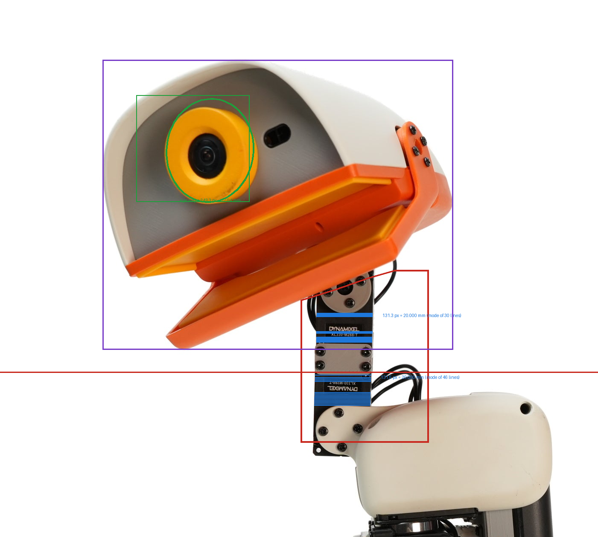
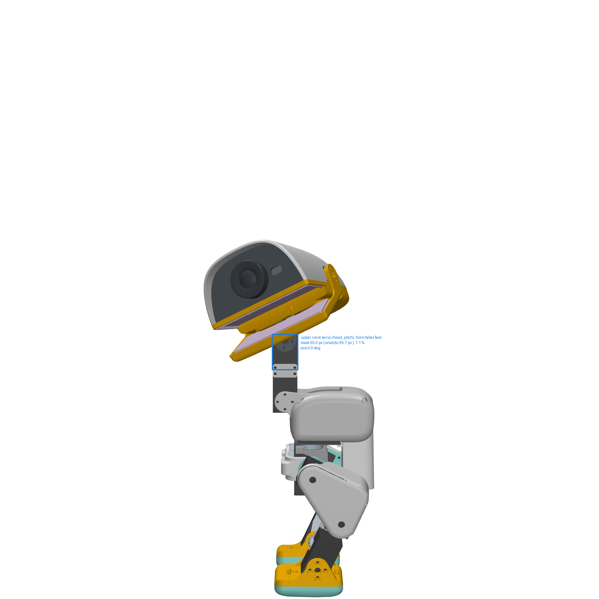
Scale tests, each run:
- PASS render mask vs analytic width (upper neck servo (head_pitch), horn/label face) — -1.07 % (mask 65.0 px, analytic 65.7 px, 39 % of the projected box visible, frame ±250 mm at 1600 px)
- PASS render mask vs analytic width (lower neck servo (neck_pitch), horn/label face) — -0.95 % (mask 65.0 px, analytic 65.6 px, 42 % of the projected box visible, frame ±250 mm at 1600 px)
- PASS two servos agree — 1.0440 vs 1.0412, 0.2 sigma apart
- PASS no fitted parameter on its search bound — all 9 free parameters inside their boxes
- note fitted head roll vs the MJCF joint range — roll -30.57 deg exceeds the head_roll joint's ±25 deg (sim/microduck_ours.xml:215): the photographed pose includes a camera roll or a hand-posed unit; a geometric fit parameter, not a joint command
Scale PASS — every scale test ran and passed: render mask vs analytic width (upper neck servo (head_pitch), horn/label face) -1.07 % (mask 65.0 px, analytic 65.7 px, 39 % of the projected box visible, frame ±250 mm at 1600 px); render mask vs analytic width (lower neck servo (neck_pitch), horn/label face) -0.95 % (mask 65.0 px, analytic 65.6 px, 42 % of the projected box visible, frame ±250 mm at 1600 px); two servos agree 1.0440 vs 1.0412, 0.2 sigma apart; no fitted parameter on its search bound all 9 free parameters inside their boxes. Size ratio product/mesh +1.0426 ± 0.0300 (camera distance is CANNOT DETERMINE from the store frame; the half-range of r over this photo's runs at D = 2000, 600, 1100 mm (0.0287) is added in quadrature) → head length +5.228 ± 3.680 mm CANNOT DETERMINE — the photographs disagree by 4.74 mm rms, more than this photo's own ±3.68 mm — a systematic error the per-photo uncertainty does not contain; only the combined row grades; along the head's own axes: major +5.308 ± 3.713 mm, minor +4.475 ± 3.024 mm.
4.2 Sky, standing, three-quarter front-left (store)
three-quarter view, jaw open; camera azimuth fitted · images/store/store_microduck-sky-standing-three-quarter-left-02.jpg 2400×2400 px ·
camera distance 1100 mm (assumed, §6b), IoU 0.959,
head pitch -21.1° yaw 38.6° roll -19.6° jaw 21.5°
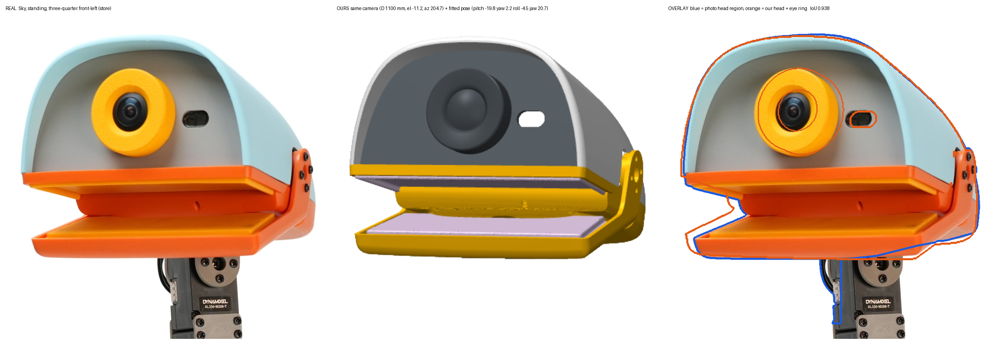
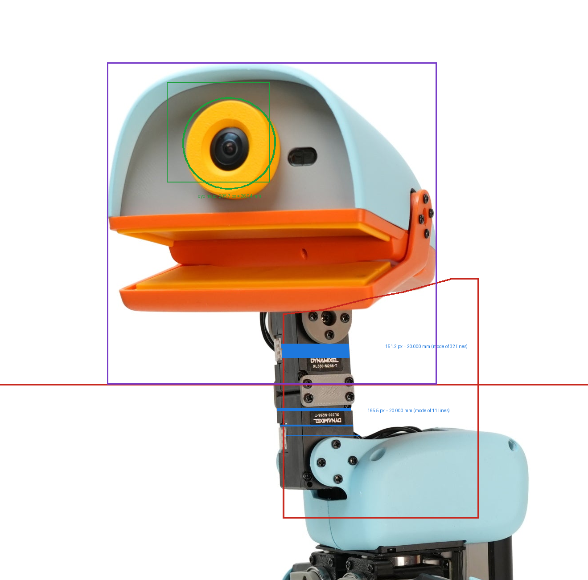
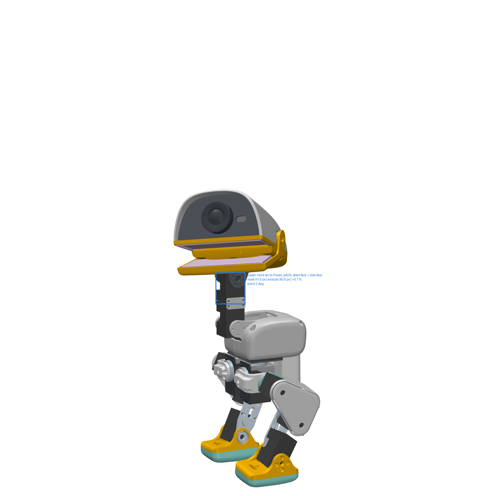
Scale tests, each run:
- PASS render mask vs analytic width (upper neck servo (head_pitch), label face + side face) — +0.11 % (mask 91.0 px, analytic 90.9 px, 46 % of the projected box visible, frame ±250 mm at 1600 px)
- note face the model's servo presents (upper neck servo (head_pitch), label face + side face) — the model's servo geom presents a 27.95 mm silhouette across its axis at this camera — a 20 x 26 case turned 20.9 deg about its long axis (leg pose + hip yaw in the model's keyframe), not the square-on 20.000 mm label face the photograph shows; the geom fixes the depth only, the face width comes from the photograph's face_evidence
- FAIL render mask vs analytic width (lower neck servo (neck_pitch), label face + side face) — -12.60 % (mask 79.1 px, analytic 90.6 px, 55 % of the projected box visible, frame ±250 mm at 1600 px)
- note face the model's servo presents (lower neck servo (neck_pitch), label face + side face) — the model's servo geom presents a 27.99 mm silhouette across its axis at this camera — a 20 x 26 case turned 21.0 deg about its long axis (leg pose + hip yaw in the model's keyframe), not the square-on 20.000 mm label face the photograph shows; the geom fixes the depth only, the face width comes from the photograph's face_evidence
- FAIL two servos agree — 0.8721 vs 0.7931, 5.8 sigma apart
- PASS no fitted parameter on its search bound — all 9 free parameters inside their boxes
Scale CANNOT DETERMINE — lower neck servo (neck_pitch), label face + side face: the render's mask read of the servo is -12.6 % off its projected width, so what the render shows at this azimuth is not the clean case face the photo scan assumes; the two servos read in this photo give size ratios 0.8721 and 0.7931 — 5.8 sigma apart (their dark runs are not the same face). The read this scale would have given — r = +0.8269 ± 0.0067, -21.24 ± 0.83 mm — is recorded but not used.
4.3 Graphite, standing, right profile (store)
head yawed towards the camera, jaw closed; scale from the ankle servo (44 mm nearer the camera than the head — the perspective camera carries that) · images/store/store_microduck-graphite-standing-profile-right-02.jpg 2400×2400 px ·
camera distance 1100 mm (assumed, §6b), IoU 0.961,
head pitch -21.1° yaw -49.1° roll 9.4° jaw 0.0°
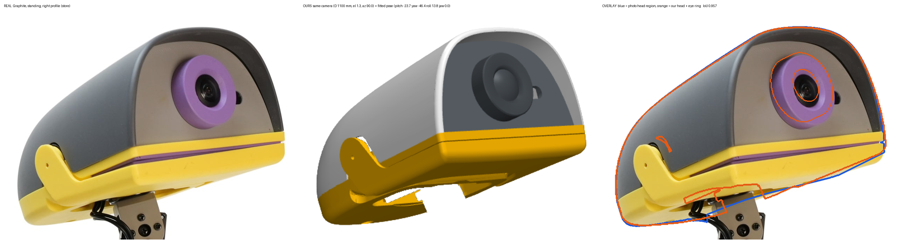
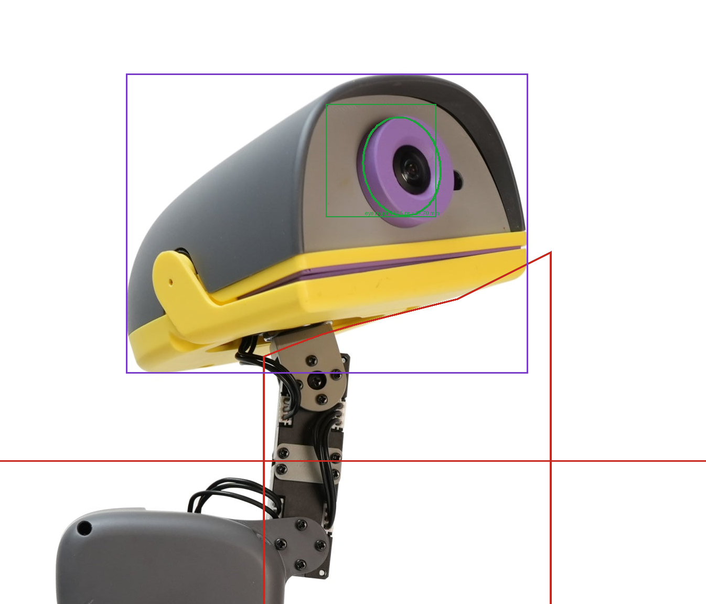
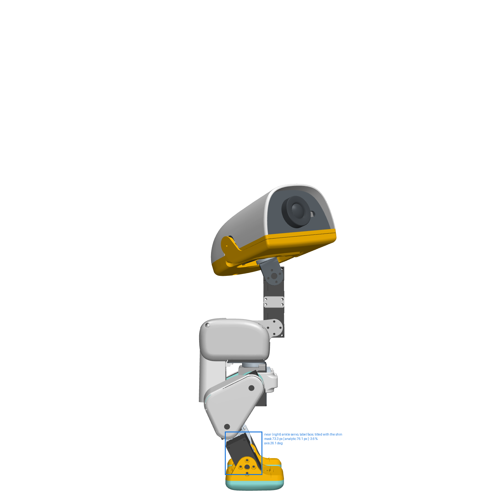
Scale tests, each run:
- PASS render mask vs analytic width (near (right) ankle servo, label face; tilted with the shin) — -3.60 % (mask 73.3 px, analytic 76.1 px, 37 % of the projected box visible, frame ±250 mm at 1600 px)
- note face the model's servo presents (near (right) ankle servo, label face; tilted with the shin) — the model's servo geom presents a 22.27 mm silhouette across its axis at this camera — a 20 x 26 case turned 5.2 deg about its long axis (leg pose + hip yaw in the model's keyframe), not the square-on 20.000 mm label face the photograph shows; the geom fixes the depth only, the face width comes from the photograph's face_evidence
- CANNOT DETERMINE two servos agree — one servo readable in this photograph — nothing to compare; the cross-check above is the only test of its scale
- PASS no fitted parameter on its search bound — all 9 free parameters inside their boxes
Scale PASS — every scale test ran and passed: render mask vs analytic width (near (right) ankle servo, label face; tilted with the shin) -3.60 % (mask 73.3 px, analytic 76.1 px, 37 % of the projected box visible, frame ±250 mm at 1600 px); no fitted parameter on its search bound all 9 free parameters inside their boxes. Size ratio product/mesh +0.9644 ± 0.0255 (camera distance is CANNOT DETERMINE from the store frame; the half-range of r over this photo's runs at D = 2000, 600, 1100 mm (0.0223) is added in quadrature) → head length -4.374 ± 3.127 mm CANNOT DETERMINE — the photographs disagree by 4.74 mm rms, more than this photo's own ±3.13 mm — a systematic error the per-photo uncertainty does not contain; only the combined row grades; along the head's own axes: major -4.300 ± 3.381 mm, minor -0.962 ± 1.937 mm.
5Measured dimensions — product against mesh, in millimetres
Head length deviation = 122.690 × (r − 1). Major / minor are the extents of the head region along its own principal axes in the photograph (0.5 / 99.5 percentile, so a stray pixel cannot set them) against the render's extents at the servo-anchored scale — the shape residual left after the size ratio. Uncertainty per axis: the scale uncertainty, ±2 px on each mask edge, and the mm/px uncertainty, in quadrature.
| Photograph | r = product/mesh | Length dev (mm) | Major photo (mm) | Major mesh (mm) | Δ major (mm) | Minor photo (mm) | Minor mesh (mm) | Δ minor (mm) · verdict |
|---|---|---|---|---|---|---|---|---|
| Cream, standing, left profile (store) | +1.0426 ± 0.0300 | +5.228 ± 3.680 | 118.724 | 113.416 | +5.308 ± 3.713 | 96.151 | 91.676 | +4.475 ± 3.024 CANNOT DETERMINE the photographs disagree by 4.74 mm rms, more than this photo's own ±3.68 mm — a systematic error the per-photo uncertainty does not contain; only the combined row grades |
| Sky, standing, three-quarter front-left (store) | CANNOT DETERMINE — scale excluded: lower neck servo (neck_pitch), label face + side face: the render's mask read of the servo is -12.6 % off its projected width, so what the render shows at this azimuth is not the clean case face the photo scan assumes; the two servos read in this photo give size ratios 0.8721 and 0.7931 — 5.8 sigma apart (their dark runs are not the same face) (the excluded read would have been r = +0.8269 ± 0.0067, -21.24 ± 0.83 mm) | |||||||
| Graphite, standing, right profile (store) | +0.9644 ± 0.0255 | -4.374 ± 3.127 | 114.415 | 118.715 | -4.300 ± 3.381 | 64.320 | 65.282 | -0.962 ± 1.937 CANNOT DETERMINE the photographs disagree by 4.74 mm rms, more than this photo's own ±3.13 mm — a systematic error the per-photo uncertainty does not contain; only the combined row grades |
| Combined (inverse-variance; spread 4.738 mm) | +0.9972 ± 0.0386 | -0.348 ± 4.738 | — | — | +0.056 ± 4.783 | — | — | +0.620 ± 2.469 CANNOT DETERMINE |
6Eye bezel — does the product have a part the mesh lacks?
No. The mesh has it: noenoeil is a Ø30.000 mm × 7.5 mm ring in front of the face panel (Table 1). The shelf part
ce-parts/microduck-eye-ring (v0.0.1, the noenoeil mesh loaded unchanged by tools/head_eye_ring_shelve.py) carries the numbers below in its evidence ledger. Two independent
reads of the product ring: (a) in each profile photograph the accent-hue ring pixels give an ellipse whose major axis is the ring diameter,
scaled by the servo (and, more robustly, by the same ring in the render through the fitted similarity — "via render", which needs no mm/px);
(b) the flat-lay inside-the-box photograph is a true front view, so every face feature is a scale-free ratio to the head width, compared
with our mesh rendered in a true front view with the head level.
| Photograph | Ellipse major × minor (px) | ring / head extent, photo / render | Δ Ø scale-free (mm) | Ø via servo (mm, carries the D question) | Centre offset (mm) | Verdict |
|---|---|---|---|---|---|---|
| Cream, standing, left profile (store) | 243.3 × 202.4 | 0.3119 / 0.2712 | +4.51 ± 0.48 | +37.04 ± 0.52 | -1.23 / -1.37 | CANNOT DETERMINE ring axis ratio photo 0.832 vs render 0.990: the render's ring is partly hidden at this pose, the two extents are not the same feature |
| Sky, standing, three-quarter front-left (store) | 205.7 × 204.9 | 0.2796 / 0.2751 | +0.49 ± 0.45 | +26.04 ± 1.23 | -1.26 / -0.93 | PASS ring axis ratio photo 0.996 vs render 0.997 agree |
| Graphite, standing, right profile (store) | 189.5 × 145.2 | 0.2421 / 0.2436 | -0.18 ± 0.45 | +27.70 ± 0.45 | +0.60 / +0.07 | CANNOT DETERMINE ring axis ratio photo 0.766 vs render 0.870: the render's ring is partly hidden at this pose, the two extents are not the same feature |

| Ratio | Photo ± u | Mesh | Diff | Photo (mm, implied) | Mesh (mm) | Δ (mm) ± u | Verdict |
|---|---|---|---|---|---|---|---|
| eye ring OD / head width | +0.3521 ± 0.0080 | 0.3226 | +9.11 % | 32.31 | 29.61 | +2.70 ± 0.76 D bracket +2.35..+2.70 | FAIL the same verdict at every camera distance from 400 mm to infinity |
| eye ring minor / major (view tilt) | +0.9820 ± 0.0192 | 0.9998 | -0.0178 | — | — | — | n/a — a unitless axis ratio — the view tilt of each picture (photo 10.9 deg, render 1.2 deg off-axis), not a length; carries no mm |
| eye centre below shell top / head width | +0.3214 ± 0.0601 | 0.2959 | +8.61 % | 29.50 | 27.16 | +2.34 ± 5.52 D bracket +1.92..+2.34 | CANNOT DETERMINE the same verdict at every camera distance from 400 mm to infinity |
| eye centre off the mid-line / head width | -0.0027 ± 0.0051 | -0.0010 | — (mesh ≈ 0) | -0.25 | -0.09 | -0.16 ± 0.50 | PASS numerator and width features at the same depth: no perspective term |
| ToF window centre right of the eye / head width | +0.2578 ± 0.0054 | 0.2441 | +5.60 % | 23.65 | 22.40 | +1.25 ± 0.53 D bracket +1.25..+1.47 | CANNOT DETERMINE the same verdict at every camera distance from 400 mm to infinity |
| ToF window centre below the eye / head width | +0.0018 ± 0.0053 | — | — | 0.17 | — | — | CANNOT DETERMINE no mesh-side value: the mesh has no ToF window geom |
| ToF window width / head width | +0.1122 ± 0.0036 | — | — | 10.29 | — | — | CANNOT DETERMINE no mesh-side value: the mesh has no ToF window geom |
| ToF window height / head width | +0.0621 ± 0.0037 | — | — | 5.69 | — | — | CANNOT DETERMINE no mesh-side value: the mesh has no ToF window geom |
| beak lip (bottom shell) top edge below shell top / head width | +0.5370 ± 0.0605 | 0.5159 | +4.09 % | 49.28 | 47.34 | +1.94 ± 5.55 D bracket +1.94..+1.94 | CANNOT DETERMINE the same verdict at every camera distance from 400 mm to infinity |
every ratio carries a propagated uncertainty: the head width from the beak band's saturation sweep 419-419 px (half-range) plus 1 px per edge, +-2 px on the ring ellipse, the shell top row's threshold spread, and the flat-lay foreshortening — the ring is seen 10.9 deg off-axis (minor/major 0.9820), which scales vertical lengths by 0.9995 and horizontal by 0.9825, taken as a systematic on every ratio whose numerator and denominator run along different axes. The shell silhouette's own width sweeps 433-500 px over min-channel thresholds [200, 210, 220, 228, 235, 240] (the soft shadow to the right of the shell), which is why the saturated beak band is the width used. The photo's mm values assume the head width is the mesh's 91.763 mm — they are the implied product dimension, not an independent measurement. The ToF window (a rounded slot 10.3 × 5.7 mm implied) has no geom in the mesh — the face panel's slot is CANNOT DETERMINE on the mesh side and is a feature the face-part rebuild must carry.
6bCamera distance — the one thing the store frames do not give
The store photographs carry no EXIF and no ruler; the near ankle servo reads 136–146 px against the neck's 131.4 px (44.1 mm nearer) depending on the scan tilt, which brackets D only between ~700 and ~1650 mm. Because the head is yawed ~50° towards the camera, its face is ~45 mm nearer than the servo and the head-to-servo ratio moves with D. The fit was therefore repeated at other distances; the half-range of r over these runs is added to the uncertainty of the verdict.
| Photograph | D (mm) | IoU | fitted yaw / roll (°) | r = product/mesh (fit u only) | head length dev (mm) | file |
|---|---|---|---|---|---|---|
| cream-profile-left | 2000 | 0.8442 | 60.8 / -3.1 | +1.0600 ± 0.0086 | +7.36 | out/head/head_fit_D2000.json |
| cream-profile-left | 600 | 0.9414 | 58.1 / -29.1 | +1.0026 ± 0.0081 | +0.32 | out/head/head_fit_D600.json |
| graphite-profile-right | 2000 | 0.8990 | -50.4 / -2.2 | +0.9735 ± 0.0119 | -3.25 | out/head/head_fit_graphite-profile-right_D2000.json |
| graphite-profile-right | 600 | 0.9530 | -50.1 / 12.0 | +1.0090 ± 0.0159 | +1.10 | out/head/head_fit_graphite-profile-right_D600.json |
| cream-profile-left (main run) | 1100 | 0.9544 | 63.8 / -30.6 | +1.0426 ± 0.0086 | +5.23 | out/head/head_fit.json |
| graphite-profile-right (main run) | 1100 | 0.9611 | -49.1 / 9.4 | +0.9644 ± 0.0123 | -4.37 | out/head/head_fit.json |
per photo: the half-range of r over that photo's runs at other camera distances is in its own uncertainty (photos[].size.D_note); the combined row inherits it. cream-profile-left: camera distance is CANNOT DETERMINE from the store frame; the half-range of r over this photo's runs at D = 2000, 600, 1100 mm (0.0287) is added in quadrature. graphite-profile-right: camera distance is CANNOT DETERMINE from the store frame; the half-range of r over this photo's runs at D = 2000, 600, 1100 mm (0.0223) is added in quadrature.
The pure-profile frame — scale-free check
scale-free: head silhouette major/minor, real 2.5291 vs Pollen's render of these meshes 2.4387 (ratio 1.0371); the two halves are not the same pose (head pitch -166.6 vs -170.5 deg in the image), so this is a coarse check, not a dimension. Neither half yields a mm/px. Real half: the dark run of 84.9 px ends on bright pixels inside the region, but a 20 mm case is ~45 px at this frame's scale (head 317 px ~ 123 mm): the run is more than the case — out/head/profile_frame_servo_zoom.png shows what it spans — at 4x the left case edge is visible at x ~1905 but the right edge is behind the grey horn bracket (x ~1950-1995) and the cables, so the run is case + bracket. Simulator half: the dark run of 102.3 px ends on bright pixels inside the region, but a 20 mm case is ~45 px at this frame's scale (head 293 px ~ 123 mm): the run is more than the case — out/head/profile_frame_servo_zoom.png shows what it spans — at 4x the run spans the servo case AND the grey neck plate beside it: both are unsaturated greys of the same luminance in this render, so no threshold separates them. Both scans are bounded to the drawn region and a run that reaches the bound is refused; the zoom below shows every accepted run. The frame is kept because it is the only published view with the head un-yawed, real beside Pollen's own render.
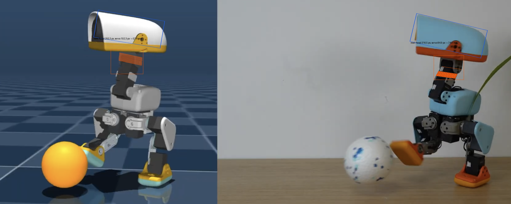
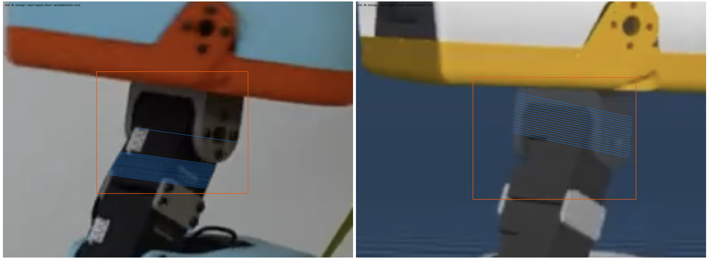
7Attribution — which of {ring, head width} is wrong, re-measured like for like
§6 leaves one thing open and it is the important one: the front view fixes the ratio eye-ring OD ÷ head width, and a ratio cannot say which member of the pair is off. Re-reading that measurement found that it was also not comparing the same feature on the two sides. Both are settled here — the first by measuring the pair with one estimator, the second by measuring the head width twice with instruments that never touch the ring at all.
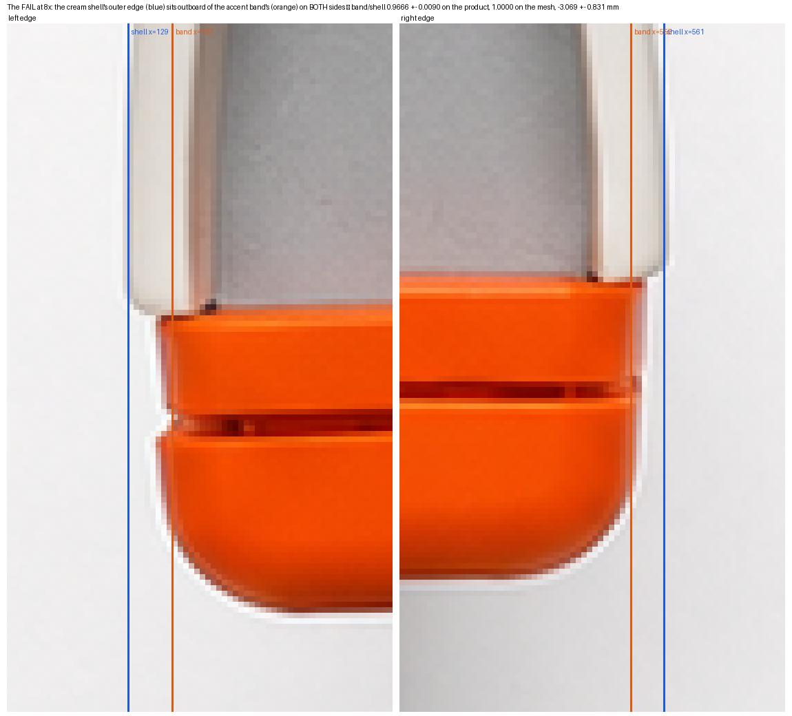
top_head_shell (91.760), bottom_head_shell (91.763) and
jaw (91.416 mm) are flush to 0.35 mm.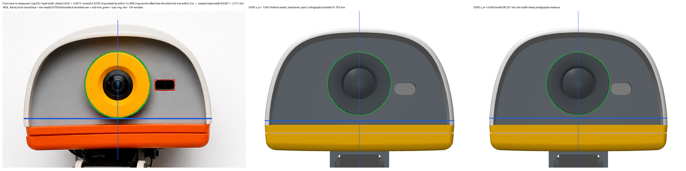
| Line | Ring-free | Head width (mm) | u | What it is |
|---|---|---|---|---|
| profile photographs, head silhouette (2) | yes | 89.040 | ± 2.410 | the lateral scale s_w at which the posed mesh best reproduces each profile silhouette; the eye ring is held at 30.000 mm, so this line does not use the ring at all |
| front view, eye ring OD / head width | no | 84.587 | ± 2.317 | the flat-lay front view, both sides measured with one estimator on the head's OUTER silhouette, the mesh pose gated by the ring's ellipticity and its offset from the shell mid-line, over a camera-distance bracket |
| front view, ToF window aperture offset from the eye axis | yes | 89.839 | ± 2.760 | the ToF window is an APERTURE in face_part (10.658 x 6.053 mm, MEASURED as the hole in the face_part segmentation mask that does not contain the eye ring — the compute board renders through it), whose centre sits 22.387 mm to the head's right of the eye-ring centre. The photograph gives the same offset as a fraction of the head width, so it implies a width without using the ring's diameter. |
| Head width — the ring-free lines combined | yes | 89.386 | ± 1.815 | -2.377 mm CANNOT DETERMINE vs the mesh 91.763 mm; χ² 0.0476 on 1 dof |
| Eye ring OD — the front view’s ratio at that width | — | 31.239 | ± 1.065 | +1.239 mm CANNOT DETERMINE vs the mesh 30.000 mm |
The width is measured by two lines that never use the ring's diameter — the profile silhouettes (cream-profile-left s_w 0.9641, graphite-profile-right s_w 0.9772) and the ToF aperture offset — and they agree (89.040 ± 2.410, 89.839 ± 2.760 mm). The ring cannot be measured by the profiles at all: their s_r sweeps put it at opposite ends of the swept range (cream-profile-left 1.1200, graphite-profile-right 0.9600), each minimum ON the end of the sweep, which is a refusal, not a measurement. So the front view's excess is NOT attributable to the ring by elimination, and it is not attributable to the width alone either: the measured width deficit accounts for 2.7 of the 6.9 %.
| Photograph | Parameter | minimiser | σ | fit noise | Reading |
|---|---|---|---|---|---|
cream-profile-left | lateral scale sw | 0.9641 | 0.0351 | 0.00394 | grid 0.9400, local-3 0.9500, IoU peak at 0.9400 |
| s / objective: 0.9000 / 0.06868 0.9400 / 0.05253 0.9700 / 0.05457 1.0000 / 0.06031 1.0400 / 0.07191 | |||||
cream-profile-left | ring scale sr | 1.1757 | 0.1106 | 0.00487 | minimum on the end of the swept range (runs above 1.1200) — a refusal, not a measurement |
| s / objective: 0.9600 / 0.06783 1.0000 / 0.06031 1.0400 / 0.05596 1.0800 / 0.05364 1.1200 / 0.04956 | |||||
graphite-profile-right | lateral scale sw | 0.9772 | 0.0369 | 0.00293 | grid 0.9700, local-3 0.9619, IoU peak at 0.9400 |
| s / objective: 0.9000 / 0.05776 0.9400 / 0.04465 0.9700 / 0.04391 1.0000 / 0.04639 1.0400 / 0.05162 | |||||
graphite-profile-right | ring scale sr | 0.9009 | 0.0994 | 0.00455 | minimum on the end of the swept range (runs below 0.9600) — a refusal, not a measurement |
| s / objective: 0.9600 / 0.04387 1.0000 / 0.04639 1.0400 / 0.05137 1.0800 / 0.05683 1.1200 / 0.06426 | |||||
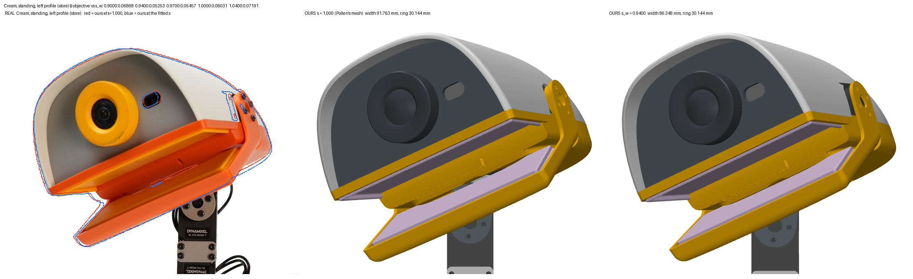
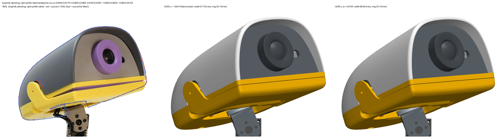
7.1 The outline itself, with nothing fitted
The head’s front-view outline, width at each row ÷ the widest row, against that row’s height above or below the eye-ring centre in the same units. No scale, no camera, no pose fit — if the product and the mesh are the same shape the two curves lie on each other. Over the compared range they agree to 1.185 mm rms (worst 2.326 mm, 0 of 60 sample rows outside the rule by more than their own uncertainty): CANNOT DETERMINE. The systematic that remains is the same finding as above — the product is wider above its widest row and narrower below it, and its widest row sits 0.0232 head-widths higher than the mesh’s.
7.2 The ToF window — the mesh has one, and it is measurable
front_view.json recorded 'the mesh has no ToF window geom' and marked the window CANNOT DETERMINE on the mesh side. There is no ToF GEOM; there IS a ToF aperture, and it is measurable. The MJCF's tof SITE sits at 22.5000 mm, 0.113 mm outboard of the aperture centre. The aperture measures 10.658 × 6.053 mm and its centre sits 22.387 mm to the head’s right of the eye-ring axis.
| Ratio | Product | Mesh | Δ at the mesh width (mm) |
|---|---|---|---|
| window width / head width | 0.10842 | 0.11392 | -0.505 |
| window height / head width | 0.05998 | 0.06462 | -0.426 |
| centre offset from the eye axis / head width | 0.24919 | 0.24396 | +0.479 |
| centre offset below the eye axis / head width | 0.00155 | 0.02355 | -2.018 |
8What would settle the remaining CANNOT DETERMINEs
- A calliper on one product head: top_head_shell length (mesh 122.690 mm), WIDTH across the beak and across the shell rim (mesh 91.763 / 91.760) and height (46.336) to 0.1 mm, and the eye ring's outer diameter (mesh 30.000) — a 0.1 mm reading beats every photograph here by an order of magnitude, settles the 1.5 mm rule outright and attributes the front-view ring/width excess to the ring or to the width.
- Or one photograph taken for the purpose: a true front view with a ruler in the plane of the face (fixes the ring/width pair in mm), and one pure profile, beak closed, head level, the XL330 label face in the focal plane of the head, 4000+ px on the long side (the length to 0.6 mm).
- The camera distance of the store photographs (EXIF focal length + sensor, stripped from the published files, or a ruler in the frame) would remove the D term from every servo-scaled ratio (photos[].size.D_note).
- A cleaner pure-profile frame from Pollen's video (the README frame's neck servo is merged with its horn bracket and cables at 4x, out/head/profile_frame_servo_zoom.png).
9Method and honest limits
- Scripts.
tools/head_photomatch.py(scale, pose fit, size — writesout/head/head_fit.jsonand every overlay),tools/head_frontview.py(front-view ratios with propagated uncertainty and verdicts —out/head/front_view.json),tools/head_profile_frame.py(the README frame —out/head/profile_frame.json),tools/head_frontfit.py(the front view re-measured like for like —out/head/front_fit.json),tools/head_width.py(the head rebuilt at a swept lateral or ring scale and refitted —out/head/width_tight.json),tools/head_width_verdict.py(the two unknowns solved —out/head/head_width_verdict.json),tools/head_verdict.py(merge + verdict —out/head/head.json),tools/gen_head.py(this page),tools/shot_page.py(the read-back inout/head/readback/). Renderer: MuJoCo offscreen segmentation at 1000², perspective free camera whose field of view follows the fitted distance so the head always spans the same frame. - Which servo face. Read off the published MJCF: the servo mesh is 20.000 (mesh x) × 34.06 (mesh z) × 29.04 (mesh y, case + horn) and in the neck body
mesh x = world −x, mesh z = world −z, so a profile camera sees the 20.000 × 34 horn/label face (
tools/head_probe.py). The photographs show the label on that face, as the drawing does. - Perspective. The store shots are close (D in Table 3 is an assumption inside a measured 700–1650 mm bracket, §6b); the near and far edges of the head differ in scale by up to 4 % at 0.5 m, which is why
the camera is perspective and the fit is repeated over D. The flat-lay front view is perspective too: its ring stands 4.4 mm nearer the camera than the beak edge (mesh depths in
front_view.json), carried as the D bracket of Table 6. - Constrained fits. A fitted parameter on the edge of its search box means the optimum is outside the box; Table 3 lists every such parameter and the photograph's scale is then refused. The first release's cream fit sat on the roll bound at −25.00° and was published without saying so; the roll box is now ±45° and the check is automatic.
- Defects found by review on the first release, all fixed 2026-09-03: a PASS printed for a cross-check that was never read (graphite's ankle servo); a section contradicting its own table on that point; a citation to sensitivity files that did not exist (D700/D1600 — the runs are D600/D2000) and a mis-stated bracket centre; a unitless ratio printed in millimetres; the largest front-view deviation (eye off the mid-line, −2.13 mm) reported as a match — a shadow artefact, now -0.16 mm on the beak band; a front-view uncertainty typed as 2 % instead of propagated; a profile-frame scan that ran into the background and blamed a bracket; a D-sensitivity note that described a different number than the one used; a licence version that the source does not state; a missing full stop; and tables wider than the page.
- What §7 supersedes, and what it does not. §6 and Table 6 are the FIRST front-view measurement and are kept as published: they are what §7 corrects, and a reader who cannot see the old number cannot check the correction. Where the two disagree, §7 governs — it measures the same feature on both sides. §5 (head length, from the profiles) and §3 (scale) are untouched by it.
- The lateral-scale instrument, and how it was broken on purpose.
tools/head_width.pyedits the head meshes’ vertices before the renderer is built (MuJoCo uploads mesh data to its GL context once, at construction) and scales them about the head body’s own lateral axis, which is MEASURED as body y to 0.0000°. Self-test: a shell scale of 0.5 halves the rendered head mask (442 → 222 px) and leaves the ring mask at 146 px; a ring scale of 1.5 takes the ring mask 146 → 219 px (×1.500) and leaves the head mask at 442 px. - What the numbers are not. Bounding-box level agreement between the product and the mesh. Not a p95 surface-distance check (that needs a scan of a product head), not a manufacturing tolerance. Every number is from published photographs and published digital assets; no physical unit has been callipered.
- Mask edges. The head region is the non-white silhouette above a neck cut, minus a neck polygon drawn by hand and shown on every measurement picture; the cream shell against the white background is segmented by chroma as well as luminance. Edge uncertainty ±2 px is carried into every mm.